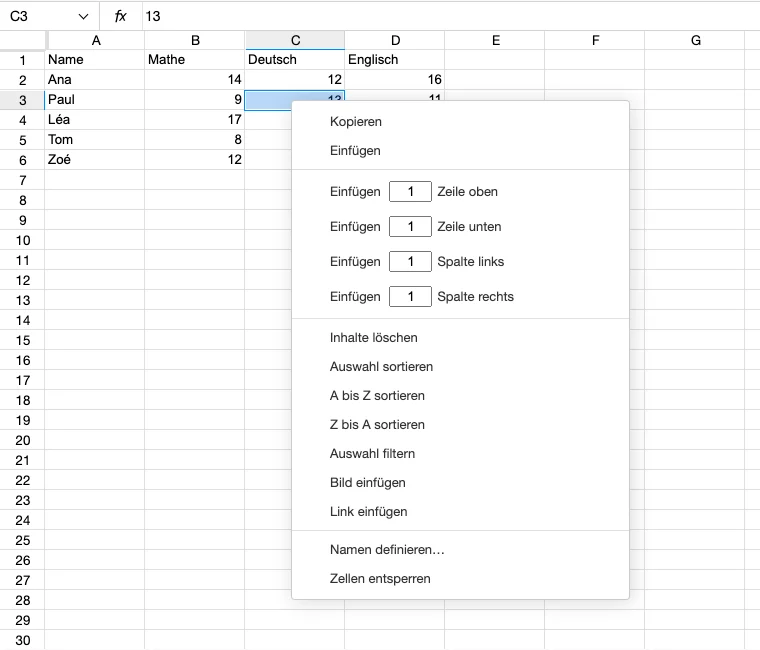

Zeilen und Spalten
Größe
| Aktion | Wirkung |
|---|---|
| den rechten Rand eines Spaltenkopfs ziehen | ändert ihre Breite |
| den unteren Rand eines Zeilenkopfs ziehen | ändert ihre Höhe |
| Rechtsklick auf den Kopf › Spaltenbreite, Zeilenhöhe | Größe in Pixeln für alle ausgewählten Spalten oder Zeilen |
Einfügen, löschen
Rechtsklick in eine Zelle oder auf einen Kopf: Einfügen 1 Zeile oben, Einfügen 1 Zeile unten, Einfügen 1 Spalte links, Einfügen 1 Spalte rechts. Die Anzahl wird im Feld getippt. Rechtsklick auf einen Kopf: Ausgewählte löschen Zeile, Ausgewählte löschen Spalte.

Formeln werden angepasst: ihre Bezüge folgen den verschobenen Zellen. Die Grenze liegt bei 10 000 Zeilen und 1 000 Spalten.
Ausblenden
Rechtsklick auf den Kopf › Ausgewählte ausblenden Zeile, Ausgewählte ausblenden Spalte. Ausgeblendete Zellen werden weiter berechnet. Um sie wieder anzuzeigen, die umgebenden Köpfe auswählen, dann Rechtsklick › Einblenden.
Fixieren
Fixierte Zeilen und Spalten bleiben beim Scrollen sichtbar. Die Grenzzelle auswählen, dann oder Ansicht › Fixieren:
| Befehl | Sichtbar bleiben |
|---|---|
| Bis zur aktuellen Zeile fixieren | die Zeilen bis zu der der Zelle, einschließlich |
| Bis zur aktuellen Spalte fixieren | die Spalten bis zu der der Zelle, einschließlich |
| Bis zur aktuellen Zelle fixieren | beides |
| Fixierung aufheben | nichts Bestimmtes |
Um die Kopfzeile zu behalten: eine Zelle der Zeile 1 anklicken, Bis zur aktuellen Zeile fixieren.